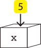

変数とは？
変数とはプログラムで使用する文字列や数値などを一時的に保存するための場所です。
箱のようなものと考えるとわかりやすいです。例えば、変数xに5を入れる（「代入」と呼ぶ）
とき、プログラミングでは x=5 のように記述します。
xという箱に5が入れられるイメージです（下図のイメージ）。

型とは？
変数には型というものがあります。変数（箱）に入れられるものの種類をあらかじめ設定するためのものです。変数の前に型を記述します。 以下に代表的な型を示します。
| 型 | 役割 | 使用例 |
|---|---|---|
| int | 整数を保存するときに使用。 | int x = 5 |
| float | 小数値を保存するときに使用。 | float x = 1.5 |
| boolean | 真偽値(true or false)を保存するときに使用。 | boolean x = true |
| String | 文字列を保存するときに使用。 | String x = "Hello" |
視覚的に見てみよう
実行ボタンを押すと、コードの動作と図解アニメーションを確認できます。
なお、ここではprintln(x)というものが使われています。
これは変数の中身を出力（確認）するためのものです。
プログラム
int x = 5;
println(x);
int x = 10;
println(x);
結果の出力
アニメーション
5
10